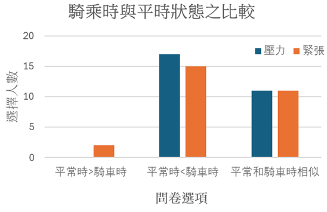
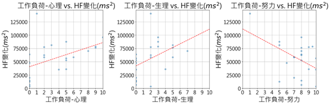
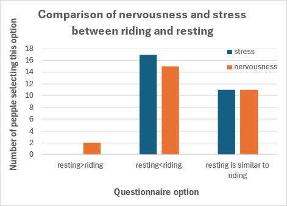
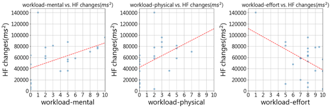

研究介紹 (Research Introduction)
機車騎乘對高齡長者之壓力
(The Stress of Scooter Riding on Elderly People)
本實驗目的在探討騎乘對中高齡長者所造成之壓力，並了解騎乘壓力是否造成心率變化。研究中會收集問卷數據，了解受試者完成任務的工作負荷和壓力、緊張程度等，也會量測PPG信號以計算心率及心率變異（heart rate variability, HRV）。本實驗包含前測和後測兩個階段：
前測階段：在受試者處於休息狀態並填寫問卷時進行，以建立基礎的心率指標。
後測階段：在受試者實際騎車時進行，以捕捉騎乘狀態下的心率。
我們分析了心率的均值和各項心率變異指標（VLF、LF、HF、LF/HF、SDNN、RMSSD），以觀察兩種狀態下的差異。
研究結果顯示，大部分受試者在騎機車時會感受到較高的壓力和緊張(圖一)。在騎車過程中感到耗費較多心力的受試者，其HF值上升較多(圖二左和中)，而感覺自己付出較多努力的受試者，其HF值則下降(圖二右)。由於HF與副交感神經活動有關，這表明騎車的工作負荷可能對自律神經系統產生影響。

圖一 騎乘時與前測的緊張與壓力比較

圖二 不同的工作負荷量指標與HF變化關係圖。圖中每個點表示一位受試者的資料，虛線表示工作負荷和HF變化之關聯性趨勢。
未來，我們將進行更多研究，以建立騎乘壓力與自律神經系統變化之間的具體關係。我們也希望透過這項研究所提供之科學證據，有助於訂定更有效的安全騎乘指導和壓力評估工具，提升老年人的騎車安全性和生活質量。
This experiment aims to investigate the stress experienced by elderly individuals while riding scooters and whether this stress leads to changes in heart rate. We collected data through questionnaires to understand participants' workload, stress, and nervous levels during the riding task. Additionally, we measured PPG (photoplethysmography) signals to calculate heart rate and heart rate variability (HRV). The experiment was conducted in two phases:
Pre-test Phase: Conducted while participants were at rest and filling out questionnaires to establish baseline heart rate indices.
Post-test Phase: Conducted while participants were riding a scooter to measure heart rate indices during riding.
We analyzed the average heart rate and various HRV indicators (VLF, LF, HF, LF/HF, SDNN, RMSSD) to observe differences between the two phases.
The results show that most participants experienced higher stress and became more nervous while riding a scooter (Figure 1). Participants who felt more mentally drained during the ride showed a greater increase in HF values, while those who felt they exerted more effort showed a decrease in HF values (Figure 2). Since HF is associated with parasympathetic nervous system activity, this suggests that the workload of riding may impact the autonomic nervous system.

Figure 1: Comparison of nervousness and stress between riding (post-test) and pre-test phases

Figure 2: Relationship between different workload indicators and HF changes.Each point represents data from an individual participant, with the dashed line indicating the trend in the relationship between workload and HF changes.
We plan to conduct further studies to establish a clearer relationship between riding stress and autonomic changes. We hope that the scientific evidence provided by this research will contribute to the development of more effective safe riding guidelines and stress assessment tools, ultimately enhancing the safety and quality of life for elderly riders.